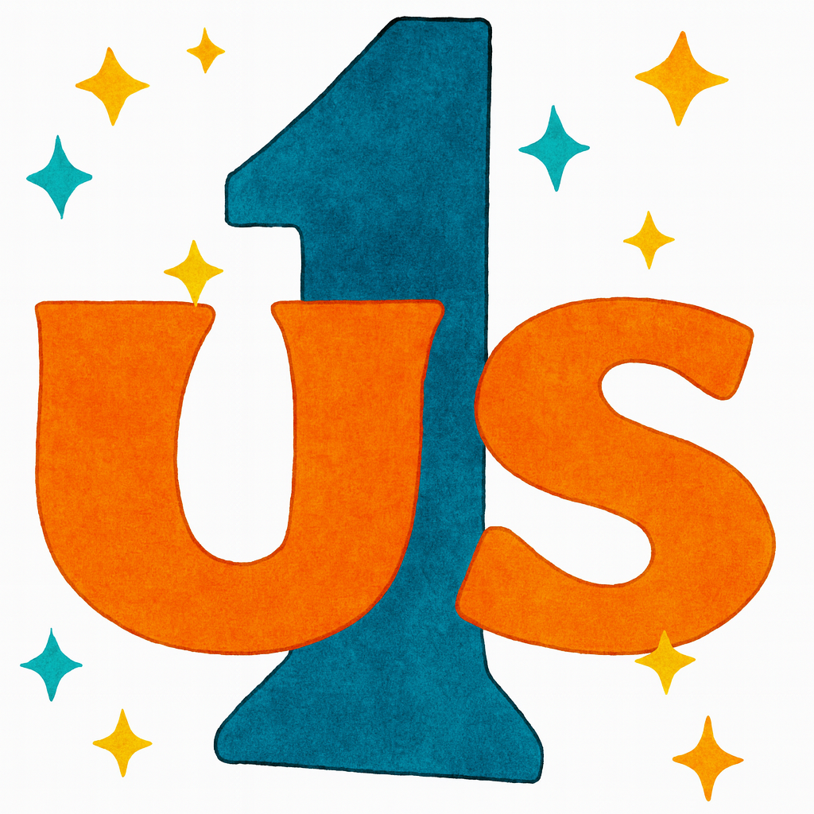
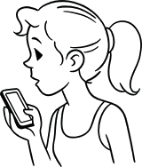

-- Wanted: Marketing help, marketing lead
Promote, shape, entirely rebrand; nothing is off the table.

A network of the people, by the people, for the people.
Retis, ergo sum. (I network, therefore I am)
If you believe that knowing who's who is important, who should be the authority? Google? Elon? The Gov't? Or us.
You reading this now are either one of us or one of them.
Farmers' market today, hmm... They don't like me over there..
Wait! Maybe I'll go using an incognito browser. That way I can be totally annoying, and they won't know it's me. I could go again next week, and they won't even know it's the same dude.
If everyone went using incognito windows, no one would know who's who or who's even a person.
SicK!
Tech advances have made it possible for us to own and manage our own
identities without relying on any authority or service. By
cryptographically vouching for each other, we could know who's who
on any service.
You could "like, comment, or subscribe" authentically, as yourself,
without relying on an authority like Facebook, X, or Insta, but as
yourself, on your own. Public key cryptography makes this possible,
allows you to hold the key.
Digital Signatures work.
ChatGPT can't steal your Bitcoin.
Sign other folks' public keys using your private key.
Crypto public keys are identities. Vouches distribute identities.
Any service can use this now, right away
Catching up on the latest, scrolling...
ad, promoted content, pseudonymous fakenews meme repost, ad, a trillion likes - wow!, promoted content, I am influenced!, no clue about this one, pseudonymous fakenews meme repost
Shocking! I better repost this one, myself (using my own pseudonymous account;).

Consider Netscape 1.0 and the early WWW. It was open, decentralized,
and heterogeneous, and it evolved specifically because of
those qualities - open for competition, playing no favorites.
One company's server serves another's data which can be viewed
by you using browsers from yet another variety of companies, and
none of them are locked in. Yeah, okay, what else is new?
Having us (people) own our identities and allowing us to use them at any service enhances all of those qualities. It diminishes silo-owned accounts and their leverage over us and their competitors. It increases our freedom and can unleash new possibilities.
To be clear: this isn't "yet another.." account type, incompatible messenger, or aspiring silo... It's the opposite - it connects the incompatible. We don't want to own another one of your accounts, we want to give you your identity.
Interoperable, non-proprietary, a paradigm
The whole thing is pure paradigm (not a protocol like HTTP, for
example).
We distribute crypto keys among ourselves, use them to sign
and publish statements regarding who possesses which key, and then
let the Interwebs sort it out.
Distributed and Portable
Content anywhere can play nice with other content.
Signed content can exist, be stored, or be served from anywhere (not from an "authority") and be combined meaningfully with other signed content from other sources, possibly referencing some of the same people.
The Internet liberated lies and pornography.
Crypto on the web can liberate trust. Let's
litter the Interweb with signed, authentic content instead.
Open, Opt-in
(Privacy, Anonymity)
Having your public key distributed provides you an ability, not a requirement, to voice yourself authentically - "First Amendment 2.0"
“It's sort of puzzling that you can have 100 percent confidence about WMD existence, but zero certainty about where they are.”
- Hans Blix
How could you be convinced that someone is human without knowing
which human?
One way to accomplish that would be to trust a service; for
example, you could trust Tinder to protect folks' identities while
ensuring that they're human (for their own, or even from your
point of view). But without revealing underlying identities,
delegate keys, and signatures they couldn't be audited; you'd just
have to trust them. In case services choose to expose the underlying
delegate keys and signatures, you or other services could audit
them and make sure they're not cheating.
A "like" is a public endorsement
(Anonymity on the Interwebs
isn't going away anytime soon ;)
Compete using our content, neither anonymous nor siloed.
The phone app only signs and publishes individual contributions
but doesn't compute anything.
The Nerdster has a rudimentary
implementation of computing your or my network and aggregating
subject ratings from our Points of View to demonstrate a starting
point.
Other services are expected and invited to do a better job, to compete for our attention and trust, to leverage the existing content out there and create more, but better.
Any improvements could be fragmented further with competing services playing off each other's improvements. Can't do that with our Facebook, X, or Insta content, which is locked in silos.
Cop Cam Taze of the Day Daily Edition, AI clacker generated YouTube comments...
Kick back, relax, and get radicalized..
Ha ha.. Nice one! Yup, she was asking for it..
But wait.. What's this? Compassion? Empathy? .. Seems human
generated.
Honestly, there should literally be a way to filter those out, right?
How might owning singular identities online change how we feel,
relate, and behave online? Like the rest of us, I'm a singular and
complex being. You may like my music taste but not my politics,
might admire my professional skills but not my humor. Would you be
more open to listening to folks about matters where you disagree if
you recognized that they were, after all, "one of us", that they're
complex and that you agree and appreciate them in other aspects?
What about if they were six degrees removed (but through IRL
human connections)?
Out: Central censorship, powerful silos, algorithmic manipulation,
low attention span, psychotic derangement, max vitriol.
In: Connection, compassion, understanding, growth, peace,
prosperity, joy,
(nerd save us ;)
Our network already exists.
Your accounts are owned by silos.
I am not my phone number, my email address, my Facebook account,
my browsing history, my purchases, my prescription medications..
I'm the guy you met on that river trip, or the one you roomed with
in college, or your friend's neighbor...
I am who your network says I am. Everywhere
We're not trying to build it - just writing it down authentically
and heterogeneously, making it accessible and useful across all
services.
People not accounts
Accounts are a construct
I got an Uber once and noticed that the driver also drives for Lyft. I asked him about it, and he said that yeah, he does, but he's a better Lyft driver (has a 4.7 on one, 4.9 on the other). He's one guy!
The same can be said for ratings of Airbnb / VRBO, eBay / Craigslist, Marketface, and many others. Having our identities available to us (our likes, our follows) can diminish their silo monopoly power, increase competition, and lead to better
If all of us had the choice to say something as an account or as ourselves
If you found that what accounts say is garbage and that what people say is worth paying attention to, might that change how and what you say?
Restraint, Reputation, Civility, Respect, Truth..
"Democracy 2.0"
Humanity has typically relied on hierarchies and central institutions to organize, with concentrated power, corruption, and systemic abuse often following. Tech that gives individuals verifiable ownership of their voice can enable decentralized organization.
In case you're disrespected by folks you don't respect, no
worries; your network probably doesn't respect them either and
isn't interested in their view. If they're in your networks, block
'em out, clean it up; you'll be doing yourself and those who
respect your judgment a service.
Now, in case you're
disrespected by folks you do respect, then that might be on you.
Shape up.
Killer apps ...
Ouch! That's in poor taste, and I'll call it out - post censored,
individual blocked for news context.
Oh, that dude.. Competent trip leader, loves dogs, known him since
Idaho, (talks too much), impeccable hygiene.. He'd keep it clean
for sure and would be an honor to follow.
Follow me to leverage all that.
Promote, shape, entirely rebrand; nothing is off the table.